In this lab Report generation feature is explained in both interactive and batch post mode for Spike_Forging lab Project.
1.1.1. Copy the Existing Project
1.1.2. Add Report Generation operation
If 3D MO basic labs: lab 03 Spike Forging is already practiced, then open the Spike Forging project in MO by selecting the project file from DEFORM GUI Main and clicking on
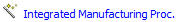
. Otherwise copy the project file available in installation path as explained below.Create a new problem either by selecting File
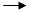
New Problem or by clicking the New Problem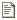
icon. The Problem Setup window will appear. Select "Integrated Manufacturing Process" radio button and "English" radio button in unit field as shown in Fig. RGL1.1.Define Problem Name as "Spike_Forging" and make sure the “Show option dialog” check box is turned on (if we do not turn on the “Show option dialog” check box, then we will not get the New Project dialog). Then click on button to open a new problem using the Integrated Manufacturing Process.
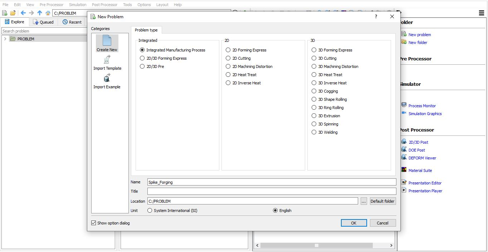
Open New Problem from DEFORM GUI Main
Multiple operation wizard will open, select Copy Existing Project radio button. Browse the project file for previously saved project and open the Spike_Forging.moproj file or browse from installation path /3d/LABS/Spike_Forging/Spike_Forging.moproj (See Fig. RGL1.2.). Click to copy and open the project.
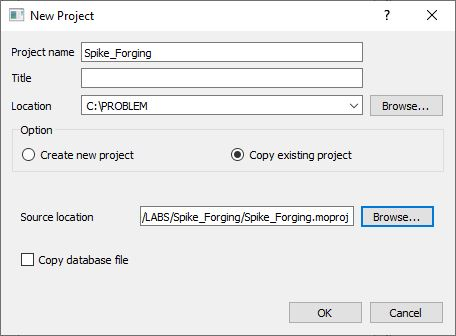
Copy existing Spike_Forging project
Select the Heat Transfer operation in operation editor and select Generate DB in operation tree to Generate DB as shown in Fig. RGL1.3. Click on .
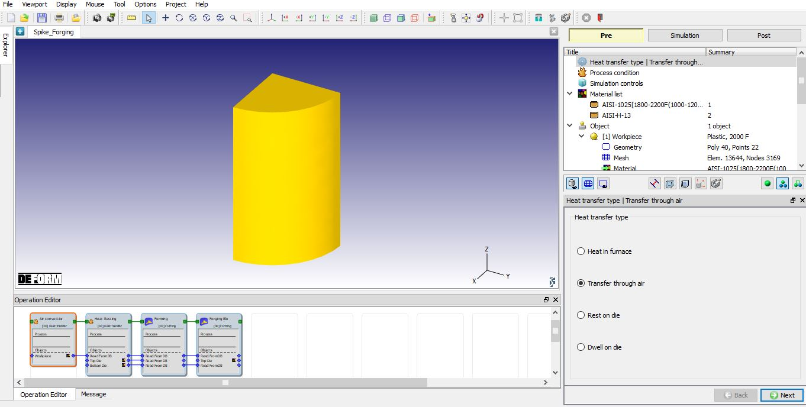
Generate Database for 1st operation
Add the Report Generation operation from the MO operation explorer as shown in Fig. RGL1.4.
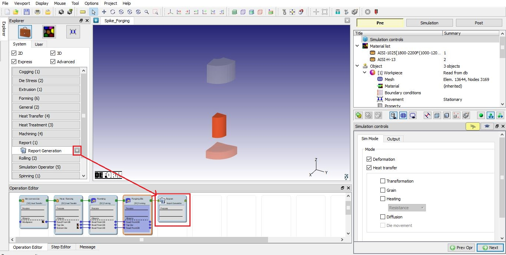
Add Report Generation operation
Click on report operation in operation editor to open the report generation operation as shown in Fig. RGL1.5.
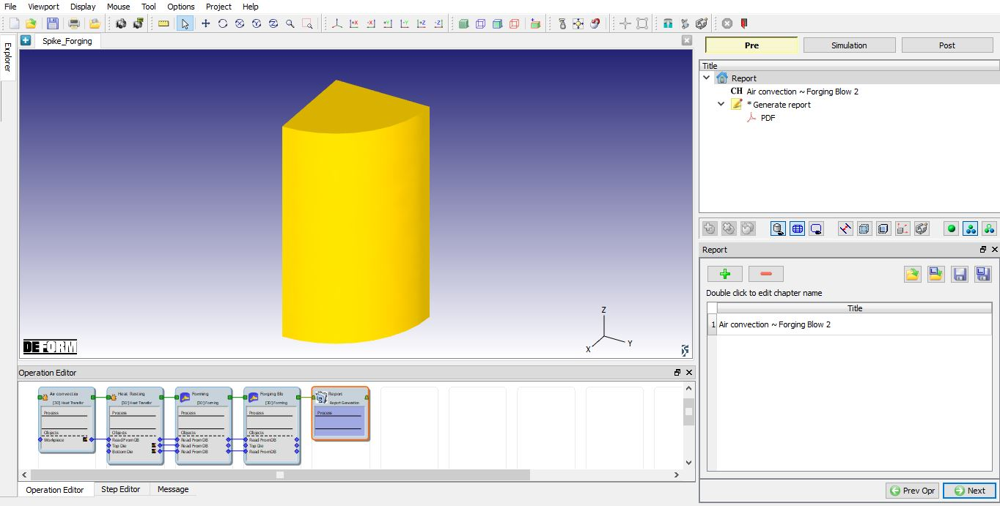
Opening Report generation operation
In Report property window user can add more than one chapter and chapter name can be changed by double clicking in title field.
These chapters are helpful to generate the different operations or different operations range results report separately as new chapters. In this lab we add 6 chapters so click (Add chapter) button five times in addition to the default one chapter. . First 4 chapters will be used to cover each of the 4 operations, fifth chapter to plot the temperature summary from first to last operation and sixth chapter to plot the load stroke curve for 2 forming operations. The chapter names are auto updated depending on the operation range selected in the respective chapter or user can define custom name. For first 4 chapters in this lab, the chapter name will be updated as we select operation range in the respective chapter. We will define custom name for 5th chapter as "Temperature Summary from all operations" and 6th chapter as "Continuous Load stroke curve forming operations" instead of operations range. Then Report window looks as shown in Fig. RGL1.6.
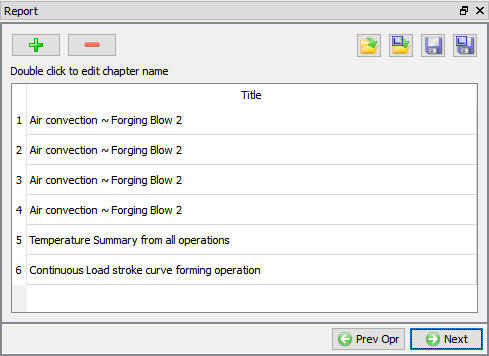
Report window with 6 chapters
Click to define added chapters.
For first chapter, select Air Convection operation as starting and ending operation and check only the State variable check box for sections as shown in Fig. RGL1.7.
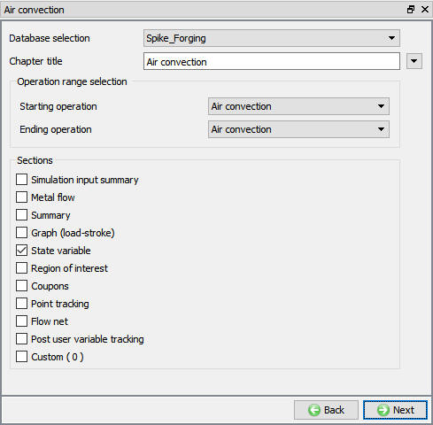
Chapter-1 settings
Click to define state variable section. Accept the state variable section title steps selected and click to add the state variable outputs. (See Fig. RGL1.8.).
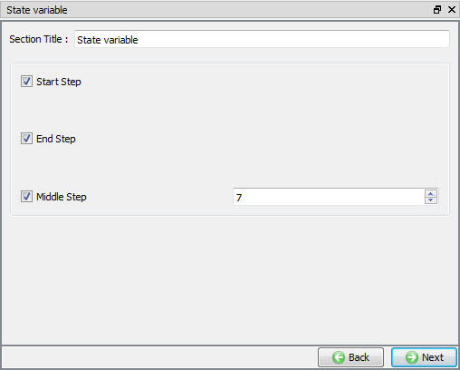
State variable section basic settings
Click on button once to add temperature state variable and click . (See Fig. RGL1.9.)
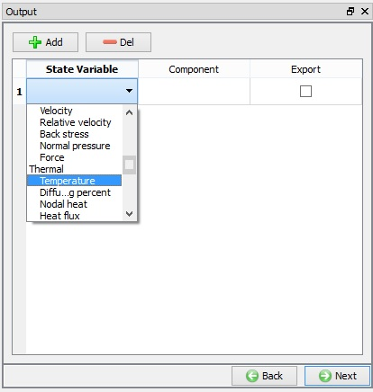
State variable output selection window
Select the objects as Workpiece and viewport as User Defined and adjust the viewport as required using display modification options pan, zoom, rotate and magnify. (See Fig. RGL1.10.) User also have a Viewport options like different axis views like +X,-X,+Y etc, Isometric, contour type selection, contour range, color bar type and Auto view. Select PDF layout as 9 as shown in Fig. RGL1.10.
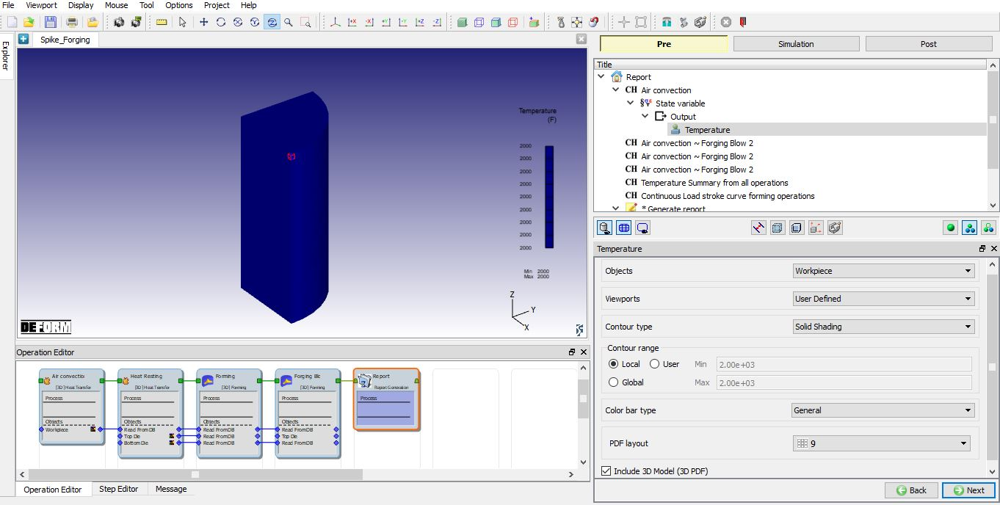
State variable Temperature settings window
Check the Include 3D Model (3D PDF) checkbox at the bottom of the window to include the 3D model in PDF file. (See Fig. RGL1.10.)
Click on to define the second chapter.
Similar to the first chapter, select only "Heat Resting" operation (2nd operation) for second chapter and add temperature state variable with only 3 steps as shown in Fig. RGL1.11 and Fig. RGL1.12.
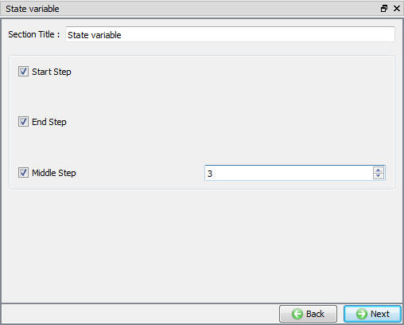
State variable settings
Click and click on button once to add temperature state variable.
State variable output selection window
Click and select the Workpiece object, User Defined viewport type and PDF layout as 9. Click to define the third chapter.
In this chapter, select the "Forming" operation (3rd operation ) as starting and ending operation and check the Metal flow, Graph and State variable sections (See Fig. RGL1.13) as this is a forming operation to review the material flow, load stroke graph for primary die and deformation state variables as different steps.
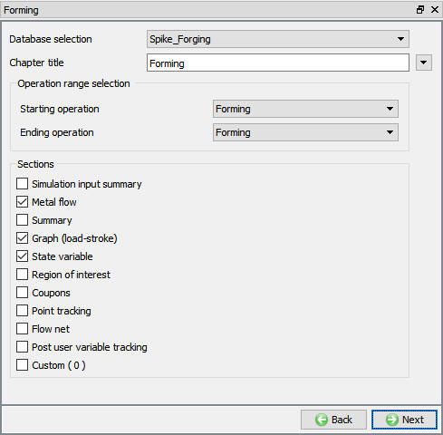
Chapter-3 settings
Click and to define metal flow steps. Accept the Metal flow steps selected as 7 and in controls define the PDF layout as 9. Click to define Load stroke graph. (See Fig. RGL1.14)
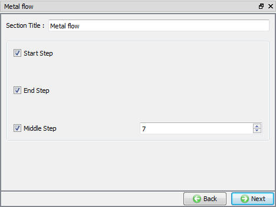
Metal Flow settings
Change the Graph section title from Graph (Load-Stroke) to Load Stroke Graph as shown in Fig. RGL1.15 and click to continue graph definition.
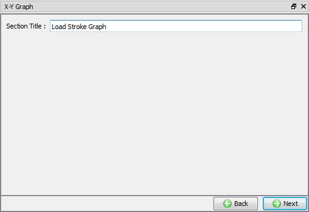
Graph section title window
Click on button once to add Load-Stroke as graph variables, select X-Axis variable as Stroke and Y-Axis variable as Z Load as shown in Fig. RGL1.16.
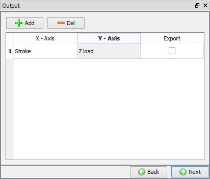
Graph variables definition window
Click and select the object as Primary die as shown in Fig. RGL1.17.
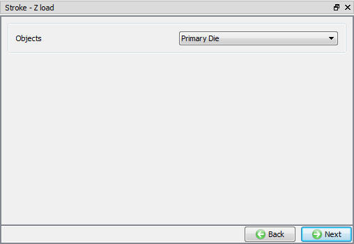
Graph objects selection window
Click and to define the state variable. Accept the 7 steps selected for state variables and click to add state variables.
Click on button twice to select Effective strain and Effective stress variables contour as shown in Fig. RGL1.18 . and click to define each sate variable contour display settings.
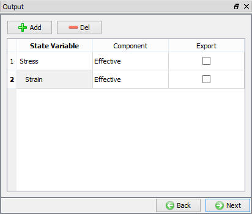
State variables adding window
Select the Objects as only workpiece, viewport as User Defined and PDF layout as 9. Also check the Include 3D model (3D PDF) for getting the 3D model in PDF and adjust the viewport display as required.
Click to define the fourth chapter.
Similar to the third chapter, select only last forming operation "Forging Blow 2" for fourth chapter and add sections Metal Flow, Stroke-Z Load Graph and Effective Stress and effective strain state variable contour sections.
Click to define the fifth chapter.
For this chapter, select starting operation as Air convection and ending operation as Forging Blow 2 and check Summary, State variable and Point tracking sections. (See Fig. RGL1.19.)
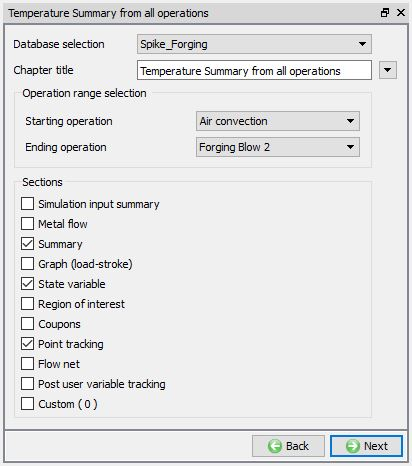
Chapter-5 settings
Click to define the sections. Accept the summary section title as Summary and click . (See Fig. RGL1.20)
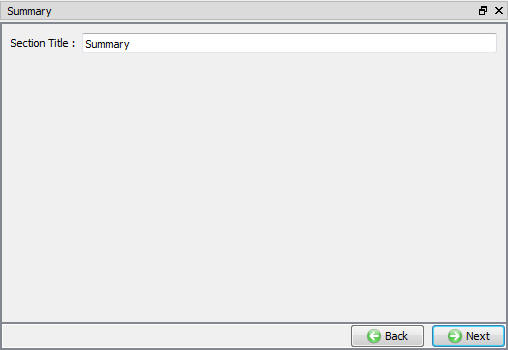
Summary section title window
Click on button once to add Temperature Vs Time curve from first to last operation. So select X-Axis variable as Time and Y-Axis variable as Temperature as shown in Fig. RGL1.21.
Summary graph adding window
Click and select Workpiece as object as shown in Fig. RGL1.22. Click to define State variable.
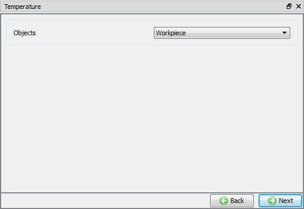
Summary graph object selection window
Click for State variable number of step selection page keeping 7 steps. Click on button once and add the Temperature state variable. Click and select the object as All, viewport as User Defined and PDF layout as 9. For this chapter we will generate the state variable contour without 3D model, so do not check the Include 3D model (3D PDF) checkbox as shown in Fig. RGL1.23.
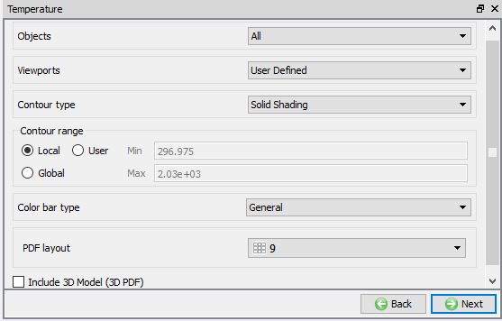
Temperature state variable settings window
Click to define point tracking section.
Accept the point tracking section title as "Point track" as shown in Fig. RGL1.24. and click .
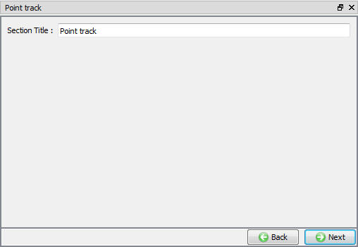
Point tracking section title window
Confirm that Moving points option is selected and click on button to select the points to track on workpiece.
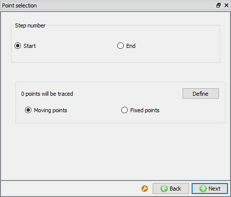
Point tracking point selection window
Defien three points for point tracking over Workpiece as shown in Fig. RGL1.26. and these points will gets added into the define point table. Click to close the define points window and click .
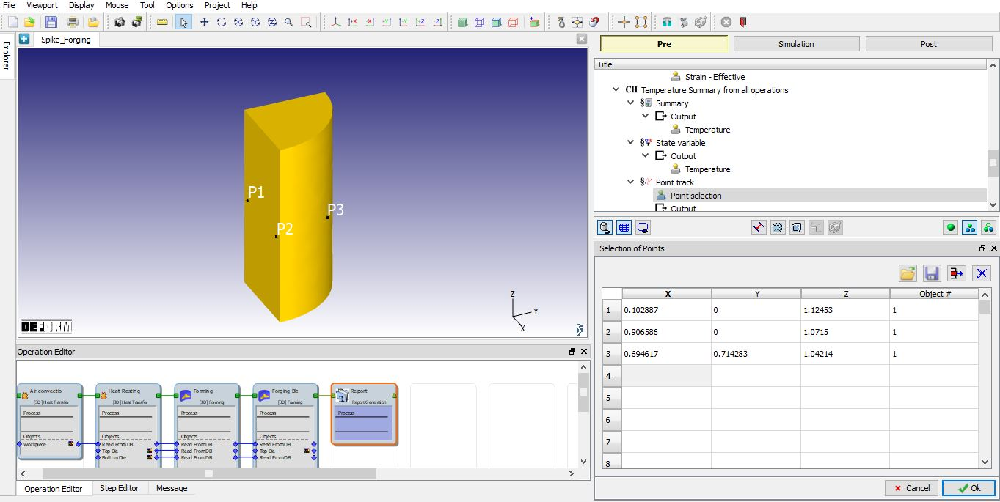
Define points window
Click on button once to select temperature state variable and click to point track graph settings.
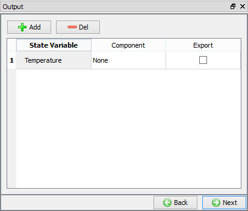
Point tracking state variable selection window
Select the Workpiece object and display option as only Graph Plot as shown in Fig. RGL1.28.
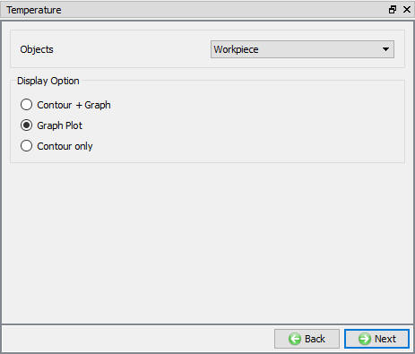
Point tracking plot settings
Click to define the sixth chapter.
Select Starting operation as Forming and Ending operation as Forging Blow 2 and check Graph section as shown in Fig. RGL1.29.
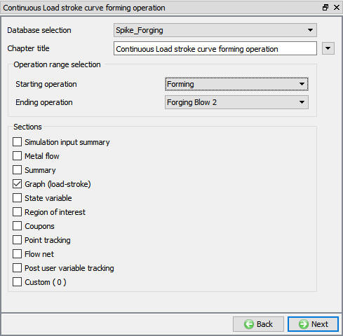
Chapter-6 settings window
Click to define Stroke- Z Load graph for primary die in Forming and Forging blow 2 operation.
Click on button once to select X-Axis as Stroke and Y-Axis as Z-Load and click to select object as Primary die.
Click to Generate report page, check both PDF and PPT Documentation type check boxes.
Click on project icon and select mode button to run the simulation.
Click on the action label to open the Run Options dialog. Use the default Continue Run option to select “Continue from the last step” (from step -1) option and then select the Simulation mode as Interactive radio button. Click on
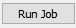
button to run the simulation.After completion of simulation of all operations prior to report generation, report generation will start to generate report for the selected state variables and graphs. Also generated PPT file will open automatically. Browse the problem directory from explorer and look for DEF_REPORT directory to find the generated PDF and PPT report files.
Open the PPT and PDF files and go through the chapter wise reports.
Chapter 1:
For chapter 1 Temperature state variable contour PPT will play all 9 images in single slide, when we click on Slide show (F5). (See in Fig. RGL1.30.)
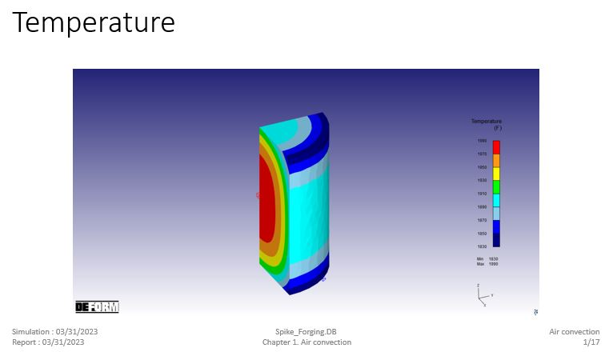
Chapter 1 Temperature state variable PPT slide
PDF will show the 9 images temperature state variable workpiece contour images in a single page as shown in Fig. RGL1.31.
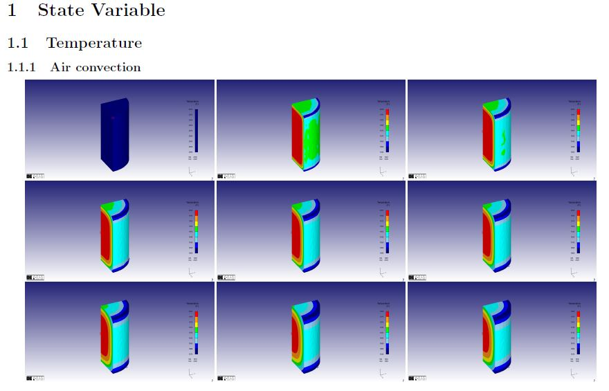
Chapter 1 Temperature state variable PDF page
3D model for temperature state variable will display for air convection operation at last step in PDF as shown in Fig. RGL1.32.
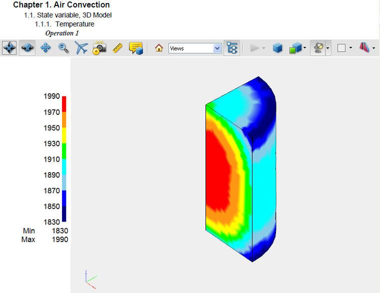
Chapter 1 Temperature state variable 3D model PDF page
User can use the 3d model options mentioned below to rotate, pan, zoom, change image capture area, measure dimensions, put comments, select different views, toggle model tree, different rendering modes, extra light options, change background color and section the object.
3D model PDF options are listed below,
Rotate : Using this option user can rotate the object about screen center.
Spin : Using this option user can rotate the object about object center.
Pan : Using this option user can move object and adjust display area without changing the size of the object.
Zoom : Using this user can change the size of the region of object.
Fly : By selecting this option if user holds the left mouse click and roll the mouse then object will move up or fly.
Camera properties :
3D Measurement Tool
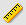
: Using this user can measure the dimensions of the object.Add 3D Comment : User can add the comments by picking the point on the object.
Default View : Using this will display the default object view, in the default view measuring or adding the comment will save as new viewports. User can latter select the Measurement View or 3DCommentView later to observe the measured dimension or added comments. (See Fig. RGL1.33.)
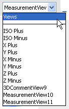
View selection field
Added comments or measured dimensions can be deleted or edited by right mouse click options.
User can also select standard view modes like Iso Plus, Iso Minus, X Plus, Y Plus etc.
Toggle model Tee : Using this user will get the model tree towards left side of the PDF page, in that tree it list the 3d model different views and comments. It also give other display options like Previous view or Next view.
Use Perspective projection : This will project the visible front area of the object.
Model Render mode : This provides different rendering types like Transparent, Illustration, Wire frame, Solid, Shaded.. etc.
Enable extra lighting : Using this user can use can enable different extra lighting settings.
Background color : Using this user can change the background color.
Toggle cross section : Activating this user can section the object section plane properties can be changed by using the pull down button Cross section properties.
Chapter 2:
For Chapter 2 Temperature state variable contour, PPT will play all 3 images in single slide, when we click on Slide show (F5). (See in Fig. RGL1.34.)
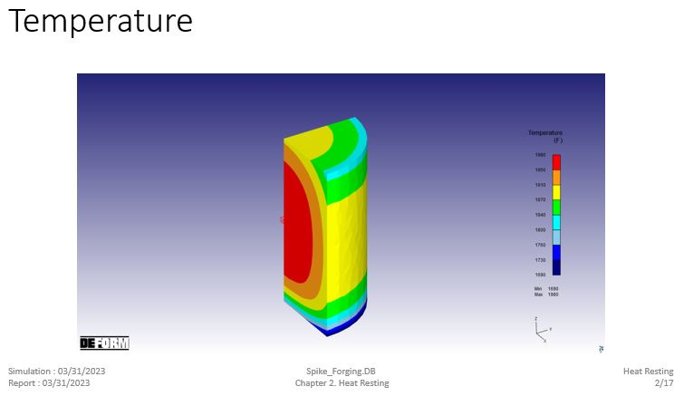
Chapter 2 Temperature state variable PPT slide
PDF will show the 3 images temperature state variable workpiece contour images in a single page as shown in Fig. RGL1.35.
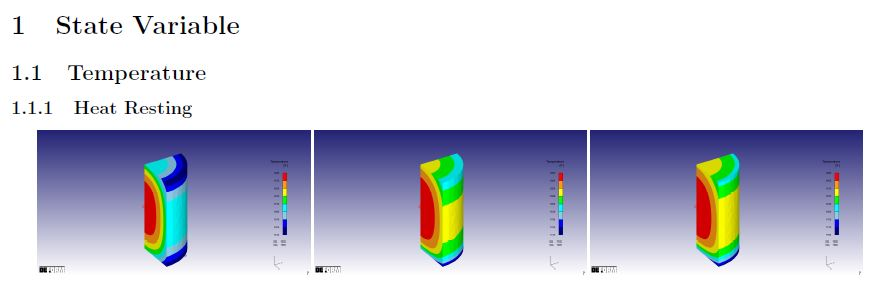
Chapter 2 Temperature state variable PDF page
3D model for temperature state variable will display for Heat resting operation at last step in PDF as shown in Fig. RGL1.36.
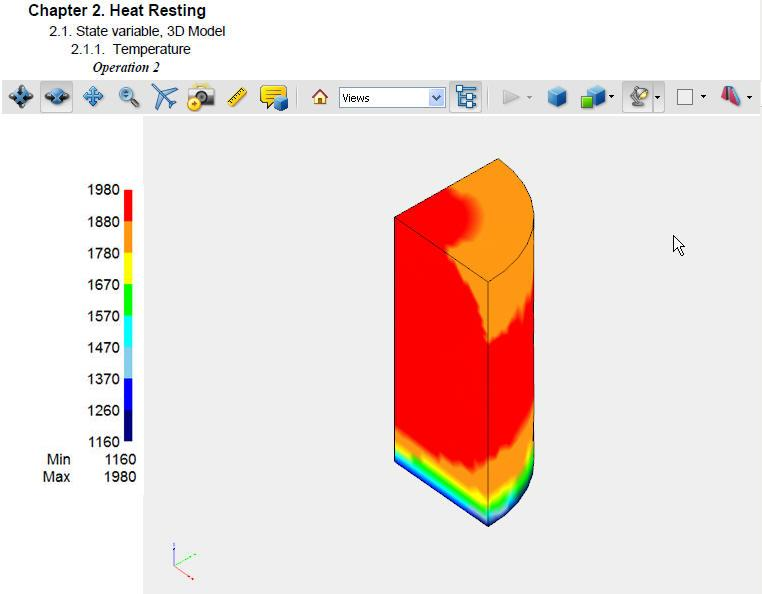
Chapter 2 Temperature state variable 3D model PDF page
For 3D model options refer the Chapter 1 results review section 3D Model PDF options.
Chapter 3 :
For Chapter 3 Metal flow, PPT will play all 7 saved steps images in single slide as we selected total 9 steps (including 1st and last step) when we click on Slide show (F5). (See in Fig. RGL1.37.)
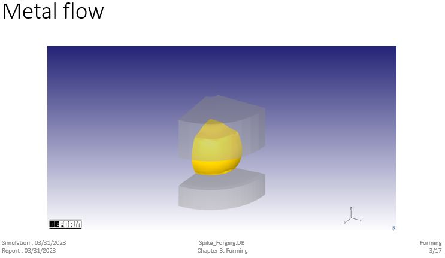
Chapter 3 Metal flow PPT slide
PDF will show all the 7 images of deformed workpiece in a single page as shown in Fig. RGL1.38.
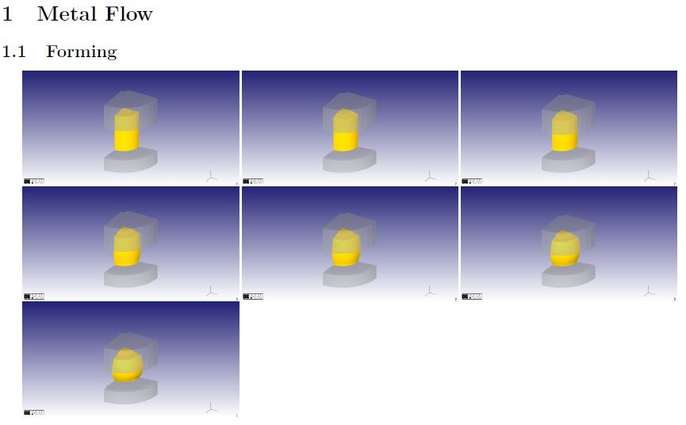
Chapter 3 Metal flow PDF page
For Chapter 3 primary die Z-Load Vs Stroke graph in PPT is as shown in Fig. RGL1.39.
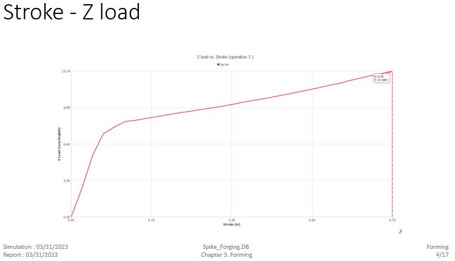
Chapter 3 Z-load vs Stroke graph PPT slide
PDF display the same Z-Load Vs Stroke graph as shown in Fig. RGL1.40.
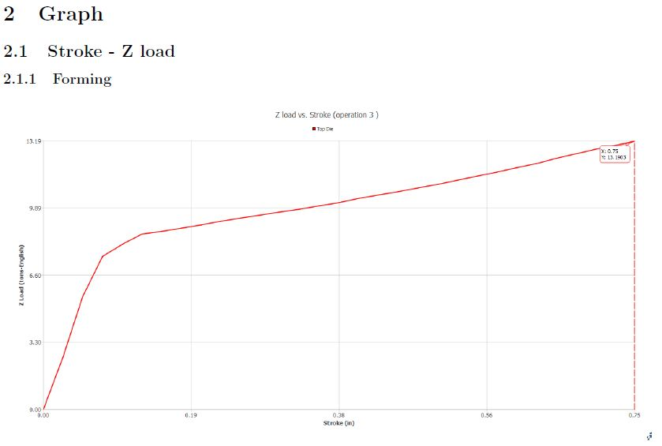
Chapter 3 Z-load vs Stroke graph PDF page
For Chapter 3 Effective Stress state variable contour, PPT will play all 7 images in single slide, when we click on Slide show (F5). (See in Fig. RGL1.41.)
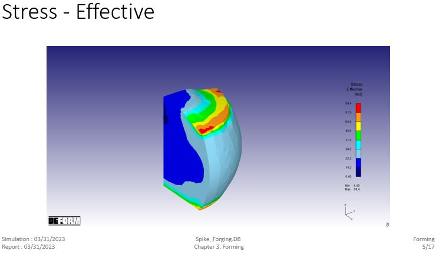
Chapter 3 Effective Stress state variable PPT slide
PDF will show the 7 images Effective Stress state variable workpiece contour images in a single page as shown in Fig. RGL1.42.
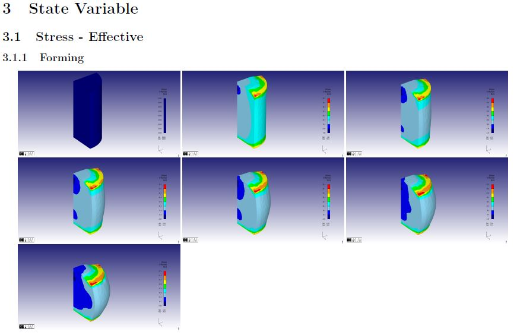
Chapter 3 Effective Stress state variable PDF page
3D model for Effective Stress state variable will display for Forming operation at last step in PDF as shown in Fig. RGL1.43.
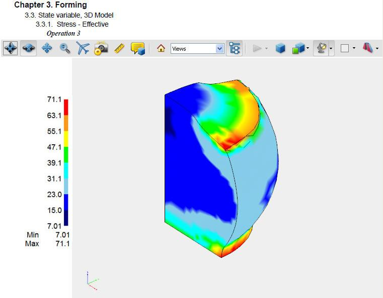
Chapter 3 Effective Stress state variable 3D model PDF page
For Chapter 3 Effective Strain state variable contour, PPT will play all 7 images in single slide, when we click on Slide show (F5). (See in Fig. RGL1.44.)
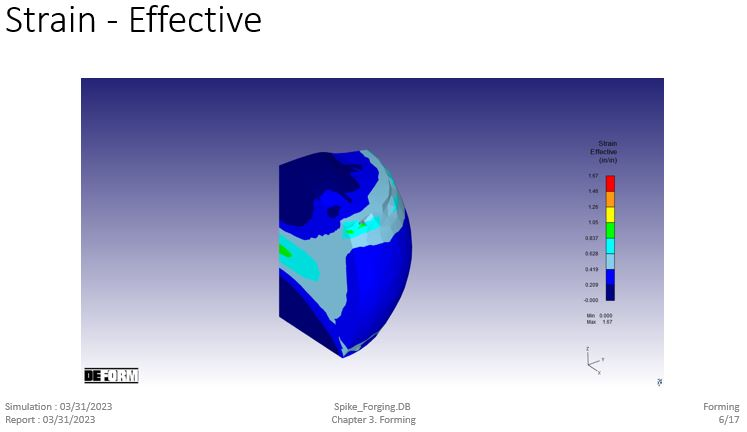
Chapter 3 Effective Strain state variable PPT slide
PDF will show the 7 images Effective Strain state variable workpiece contour images in a single page as shown in Fig. RGL1.45.
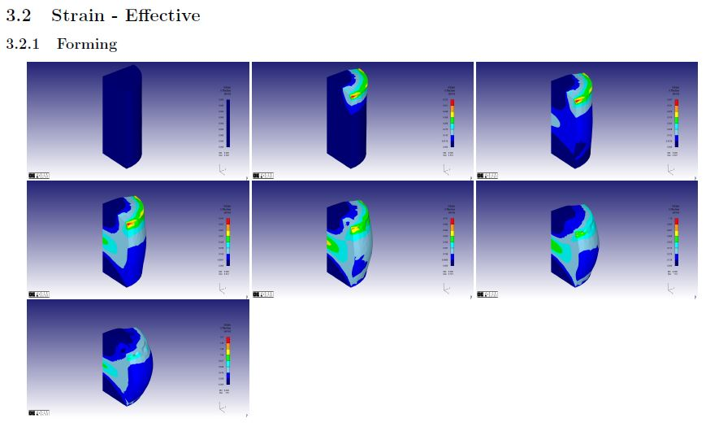
Chapter 3 Effective Strain state variable PDF page
3D model for Effective Strain state variable will display for Forming operation at last step in PDF as shown in Fig. RGL1.46.
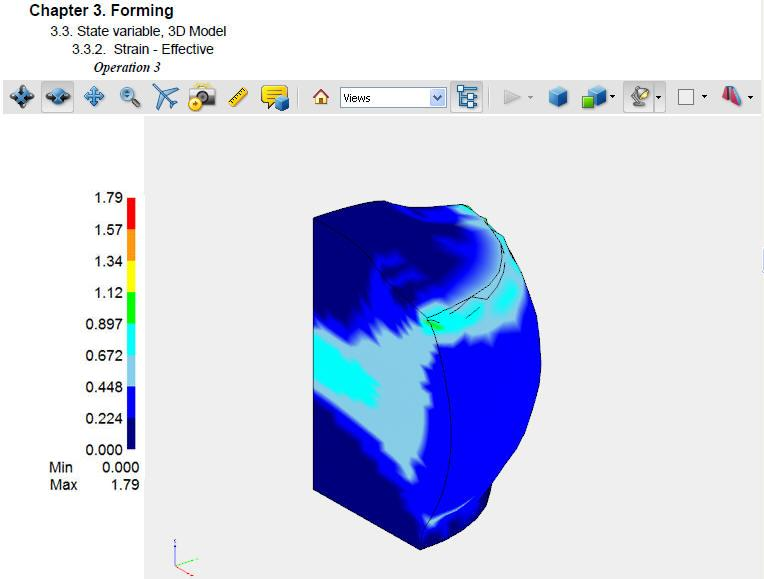
Chapter 3 Effective Strain state variable 3D model PDF page
Chapter 4 :
For Chapter 4 Metal flow, PPT will play all 3 saved steps images in single slide as we selected total 9 steps (including 1st and last step) when we click on Slide show (F5). (See in Fig. RGL1.47.)
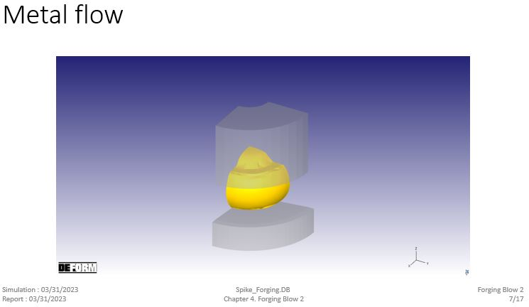
Chapter 4 Metal flow PPT slide
PDF will show all the 3 images of deformed workpiece in a single page as shown in Fig. RGL1.48.
Chapter 4 Metal flow PDF page
For Chapter 4 primary die Z-Load Vs Stroke graph in PPT is as shown in Fig. RGL1.49.
Chapter 4 Z-load vs Stroke graph PPT slide
PDF display the same Z-Load Vs Stroke graph as shown in Fig. RGL1.50.
Chapter 4 Z-load vs Stroke graph PDF page
For Chapter 4 Effective Stress state variable contour, PPT will play all 3 images in single slide, when we click on Slide show (F5). (See in Fig. RGL1.51.)
Chapter 4 Effective Stress state variable PPT slide
PDF will show the 3 images Effective Stress state variable workpiece contour images in a single page as shown in Fig. RGL1.52.
Chapter 4 Effective Stress state variable PDF page
As we are not selected the Include 3D model checkbox 3D PDF model not available for the Chapter 4.
For Chapter 4 Effective Strain state variable contour, PPT will play all 3 images in single slide, when we click on Slide show (F5). (See in Fig. RGL1.53.)
Chapter 4 Effective Strain state variable PPT slide
PDF will show the 3 images Effective Strain state variable workpiece contour images in a single page as shown in Fig. RGL1.54.
Chapter 4 Effective Strain state variable PDF page
Chapter 5 :
For Chapter 5 Temperature summary graph for workpiece, from 1st to last operation in PPT file is as shown in Fig. RGL1.55.
Chapter 5 temperature Summary graph for Workpiece PPT slide
PDF display the summary graph for Temperature for workpiece in all operation as shown in Fig. RGL1.56.
Chapter 5 temperature Summary graph for Workpiece PDF page
For Chapter 5 Temperature state variable contour for all objects will play operation wise in different PPT slides. Air convection temperature contour refer the Fig. RGL1.30. Similarly for the PDF images of temperature contour refer Fig. RGL1.31.
Heat resting temperature contour steps play in PPT refer the Fig. RGL1.57.
Chapter 5 Temperature state variable PPT slide for Heat resting operation
PDF images of temperature contour for heat resting refer Fig. RGL1.58.
Chapter 5 Temperature state variable PDF page for Heat resting operation
Similarly during Forming operation temperature contour steps play in PPT refer the Fig. RGL1.59.
Chapter 5 Temperature state variable PPT slide for Forming operation
PDF images of temperature contour for Forming refer Fig. RGL1.60.
Chapter 5 Temperature state variable PDF page for Forming operation
During Forging Blow 2 operation temperature contour steps play in PPT refer the Fig. RGL1.61.
Chapter 5 Temperature state variable PPT slide for Forging Blow 2 operation
PDF images of temperature contour for Forging Blow 2 refer Fig. RGL1.62.
Chapter 5 Temperature state variable PDF page for Forging Blow 2 operation
PPT slide for Chapter 5 point tracking graph for workpiece temperature state variable at centre and 2 points on outer Die is as shown in Fig. RGL1.63.
Point tracking graph for workpiece temperature PPT slide
PDF point racking page is shown in Fig. RGL1.64.
Point tracking graph for workpiece temperature PDF page
Chapter 6 :
PPT slide for Z-Load Vs Stroke graph for primary die in forming and forging Blow 2 operation is as shown in Fig. RGL1.65.
Primary die Z-Load Vs Stroke graph PPT slide
PDF Z-Load Vs Stroke graph is as shown in Fig. RGL1.66.
Primary die Z-Load Vs Stroke graph PDF page
For details on using other sections of the Report generation refer the related topics.
Related Topics: